Next: 衝突回避を含む逆運動学 Up: ロボットの動作生成 Previous: 基礎ヤコビ行列 Contents Index
重み付きノルムを以下のように定義する.
ここで,
 は
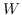 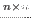であり, 対象で全ての要
素が正である重み係数行列である.
この
を用いて,
は
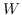 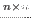であり, 対象で全ての要
素が正である重み係数行列である.
この
を用いて,
 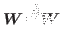を以下のよう
に定義する.
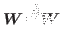を以下のよう
に定義する.
| 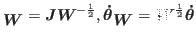 | (15) |
この
 を用いて, 以下の式を得
る.
を用いて, 以下の式を得
る.
| 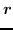 | 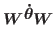 | (16) | |
| 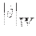 | 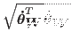 | (17) |
これによって線型方程式の解は@xdefthefnmark![[*]](crossref.png) footnotemarkから
以下のように記述できる.
footnotemarkから
以下のように記述できる.
| 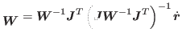 | (18) |
また、現在の関節角度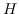が関節角度限界
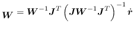に対してどの程度余裕があるかを評価する
ための関数
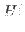 は以下のようになる10).
は以下のようになる10).
次にEquation に示すような
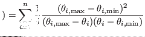の重み係数行列
を考える.
| 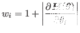 | (21) |
さらにEquation から次の式を得る.
| 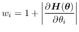 | (22) |
関節角度限界から遠ざかる向きに関節角度が動いている場合には重み係数行列を
変化させる必要はないので,を以下のように定義しなおす.
| 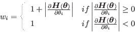 | (23) |
を用いることで関節角度限界回避を含む逆運動学を解くこ
とができる.
2016-03-15